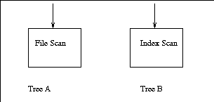

Sample Iterator Trees


Tree A:
The call to get_next calls on the File Scan Iterator to
retrieve tuples one at a time from the Heap File.
The details: The heap file is opened and a scan object is created.
get_next is then called on the scan object.
- FileScanIter::FileScanIter
- HeapFile::HeapFile
- HeapFile::openScan
- FileScanIter::get_next
Tree B:
The call to get_next calls on the Index Scan Iterator to
retrieve tuples one at a time from the Heap File after the rid has been retrieved
from the Access Method.
The details: The access method is opened and a scan object is created.
get_next is then called on the scan object.
- IndexScanIter::IndexScanIter
- BTreeFile::BTreeFile or LinearHashingFile::LinearHashingFile
- HeapFile::HeapFile
- BTreeFile::openScan or LinearHashingFile::openScan
- IndexScanIter::get_next
- BTreeScan::get_next or LinearHashingScan::get_next
- HeapFile::getRecord
Back to the Iterator Page
Back to the List of Components
Back to the Minibase Home Page